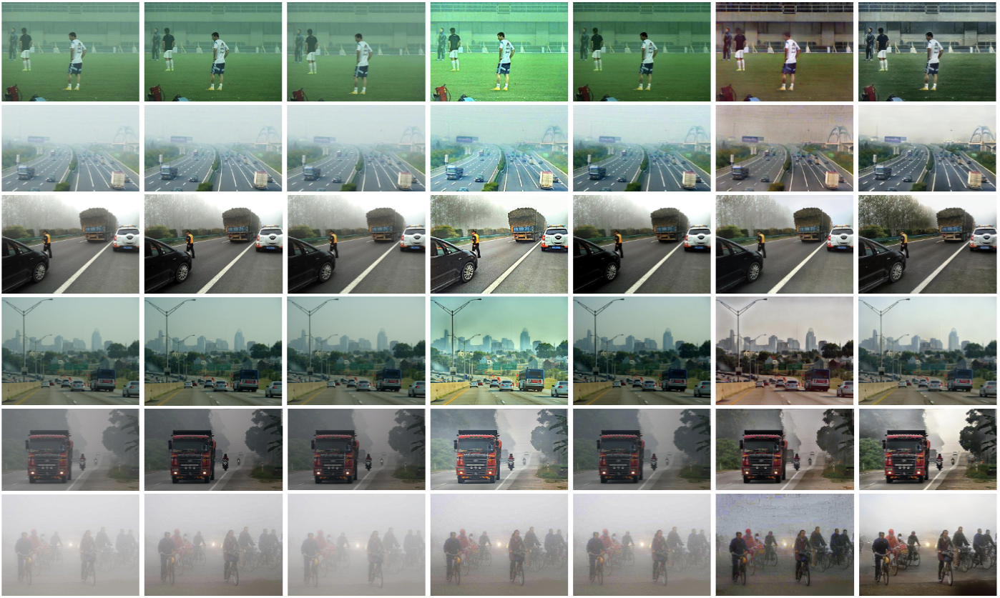

TripAR3D: Creating High-quality 3D Assets via Next-Part Prediction
1Nankai University
2University of Science and Technology of China
3Shanghai AI Lab
Abstract
We present TripAR3D, a novel framework that consists of a 3D-aware Vector Quantized-Variational AutoEncoder (VQ-VAE) and a Generative Pre-trained Transformer
(GPT) to generate high-quality 3D assets. The core insight of this work is to migrate the multimodal unification
and promising learning capabilities of the next-token prediction paradigm to conditional 3D object generation. To
achieve this, the 3D VQ-VAE first encodes a wide range of
3D shapes into a compact triplane latent space and utilizes
a set of discrete representations from a trainable codebook
to reconstruct fine-grained geometries under the supervision of query point occupancy. Then, the 3D GPT, equipped
with a custom triplane position embedding called TriPE,
predicts the codebook index sequence with prefilling prompt tokens in an autoregressive manner so that the composition
of 3D geometries can be modeled part by part. Extensive
experiments on ShapeNet and Objaverse demonstrate that
TripAR3D can achieve superior generation quality over existing methods in text-to-3D and image-to-3D tasks.
Method

Overall architecture of the proposed TripAR3D framework. (a) 3D VQ-VAE first encodes the point cloud uniformly sampled
from 3D meshes into a set of learnable tokens in the triplane latent space. Then, these continuous triplane features are quantized as discrete
embeddings from a trainable codebook. Next, these quantized representations are deformed twice, along with two self-attention modules
in several attention layers to achieve feature enhancement in each plane and information interaction among the three planes. Subsequently,
the triplane features are upsampled to a higher resolution for fine-grained geometry details. Finally, the query point features sampled from
this triplane are fed to an MLP network for their occupancy predictions. (b) 3D GPT first organizes the triplane indices from the pre-trained
codebook of 3D VQ-VAE into a sequence, in which the indices within each plane are placed in a raster scan order and the indices at the
same positions of the three planes in an adjacent order. Then, the prompt features are employed as the prefilling token embedding of the
sequence for conditional 3D object generation. Next, this sequence is modeled by multiple decoder-only transformer layers via next-part
prediction. By querying the codebook, the predicted index sequence can be transformed into triplane features to synthesize 3D objects.
Image-to-3D

Text-to-3D

Citation
@inproceedings{zhang2024tripar3d,
title={TripAR3D: Creating High-quality 3D Assets via Next-Part Prediction},
author={Zhang, Xuying and Liu, Yutong and Li, Yangguang and Zhang, Renrui and Liu, Yufei and Wang, Kai, Ouyang, Wanli and Xiong, Zhiwei and Gao, Peng and Hou, Qibin and Cheng, Ming-Ming},
booktitle={arxiv:24},
year={2024}
}
Contact
Feel free to contact us via zhangxuying1004@gmail.com or ustclyt@mail.ustc.edu.cn